Step By Step: Manually Set up Resource Groups for initial deployment of the web application
Creating a resource group
- Open the Azure Portal by navigating to https://portal.azure.com
- Click "Create a resource"
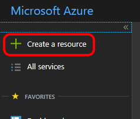
- In the search box, search for "Resource Group"
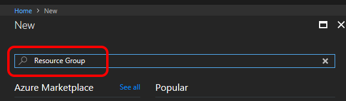
- In the search results, click "Resource group" and then click "Create"
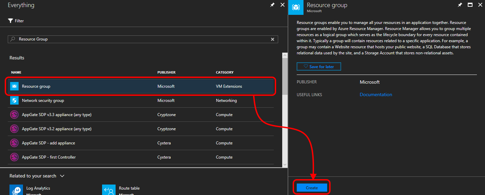
- Enter the resource group name, select your subscription and select the location closest to you as Resource group location. Then click "Create".
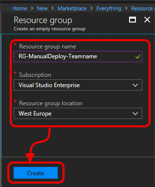
- After a little while your resource group will be created. Click "Go to resource group" to open it.
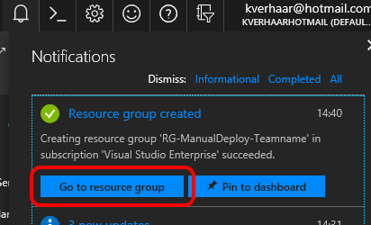
- You will see that your freshly created resource group is empty.
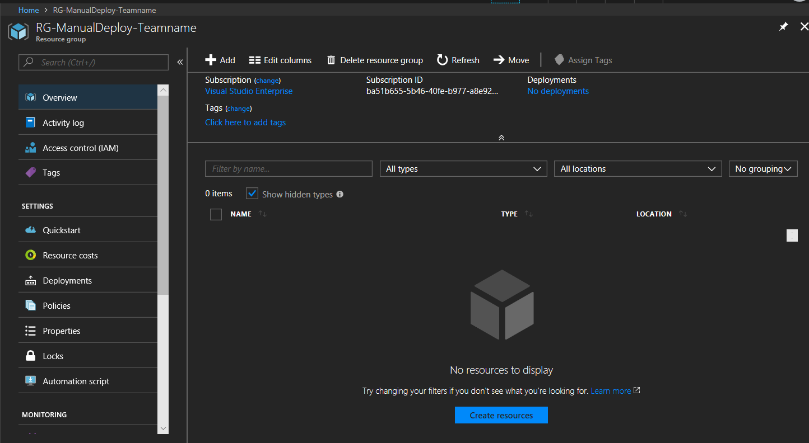
Create security group and add members to security group
- In the Azure portal navigate to the Azure Active Directory blade
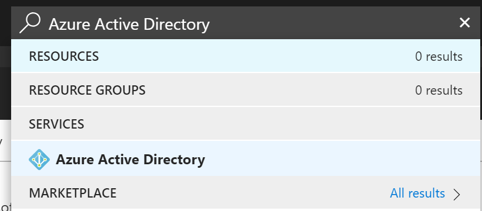
- In the blade, select Groups
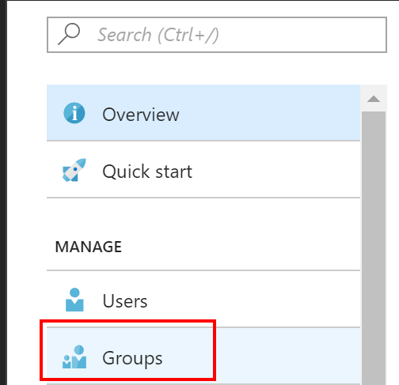
- Press the + button to create a new security group
- Create a group call Azure (teamname). Select as Group type "Security"
- Select Members in the same blade
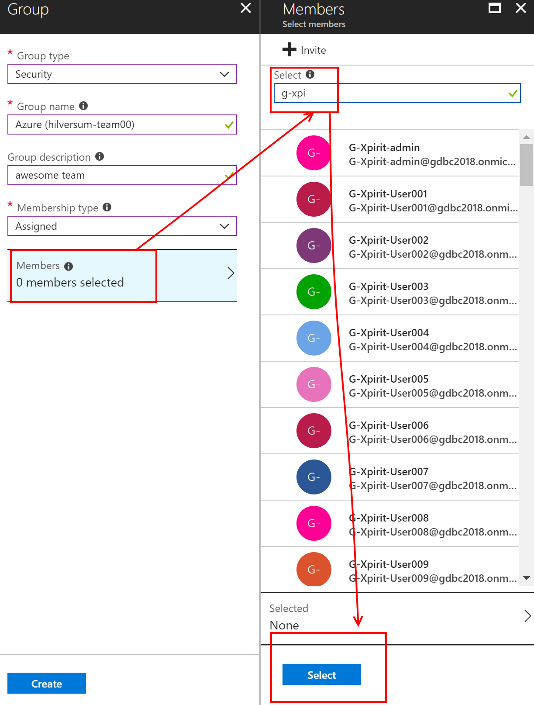
- Once the group is created, select "Members"
- Press the + Add Members button
- Search for "g-venue-" and select the members from your team and save the group
Assign security group to resource group
- Find your Resource Group e.g. use the Search box
- In your resource group, click "Access control (IAM)", click "Add", select "Contributor" for the role and find your team through the search box.
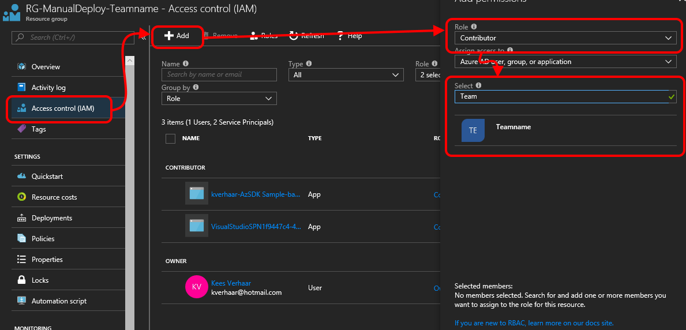
- Select your team and click "Save". You should see your team being added as "Contributor" specific for this resource.
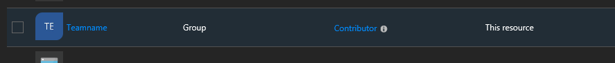